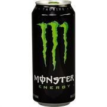

Introduced 2002
Monster Energy Original
Still current
Details & sources
Monster launched in 2002. The original is included as the starting point of the story, not as a discontinued flavor.
Original flavor; later packaging. Packaging reference: List Challenges.